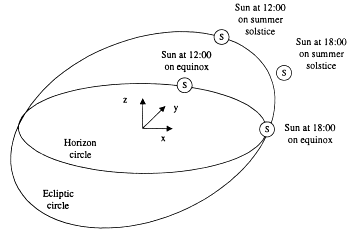
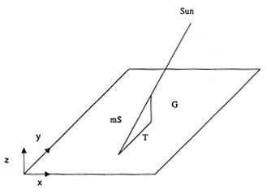

The photo below shows such a dial installed outside, and Image #3 on shows a dial drawn for the Perl Journal offices in Massachusetts. Because the sun occupies any particular position in the sky exactly twice per year, two dials are needed: one for the days between the winter solstice and the summer solstice (December 21 to June 21), and one for the other half of the year. The first dial is used in the Winter and Spring, when the sun is descending to its lowest angle at the winter solstice. The second dial is used in the Summer and Fall, when the sun is rising toward its highest angle at the summer solstice.
Before describing how to generate such dials, let me provide a little background. Sundials are just about the oldest functioning machines known. Dials have been found in Egypt dating from the reign of Thutmose III in around 1500 BCE. Mention of them also appears in Chinese writings from around that time. The Greeks and Romans used them extensively, although their hour lines were of equal spacing and so do not represent intervals of equal time.
One of the most famous dials of antiquity, the Tower of the Winds, still stands in Athens. It's an octagonal tower about fifteen meters high and five across, and was built around 100 CE. It has a sundial inscribed on each of its eight faces, and is surmounted by a frieze showing figures representing the eight winds. It uses iron rods for gnomons, which clearly have not been out in the rain for two thousand years, but the dials themselves could date back that far. Besides perhaps a few aqueducts, this is one of the only Roman devices still working.
The oldest dial in the U.S. is said to be in Salem, Massachusetts, and dates from 1650. Massachusetts can also claim the favorite poet of gnomonists, John Greenleaf Whittier, who wrote in 1881:
With warning hand I mark time's rapid flight,
From life's glad morning to its solemn night.
Yet through the dear God's love I also show
There's light above me by the shade below.
This appears as a motto on nineteenth century dials all over the country, and manages to pack a quadruple metaphor into only four lines. Sundials are compared to a prophet, to the course of life from birth to death, to the promise of heaven, and to its contrast with death.
Sundials are traditionally associated with mortality, of course, which may be why they appealed to the Puritan strain in New England. It may also be why they are so commonly used as garden ornaments; they act as a memento mori in the midst of all the greenery. This association is especially evident in a giant dial at a Vietnam War memorial in Kentucky. An entire plaza is marked off as a sundial, with a giant gnomon at one end. The names of all the local men who died in the war are inscribed on the plaza, and the tip of the gnomon's shadow brushes across each name on the day of the man's death.
Most dials, though, are simply public sculpture. The Royal Observatory at Greenwich, England, has a striking dial with a broad cylindrical plate below two arching dolphin tails acting as gnomons. The Museum of Science in Worcester, Massachusetts, has a dial where the observer acts as the gnomon. You reach up and put your finger at the appropriate place on a crossbar, and your finger's shadow marks the time. The Mount Laguna Observatory dial projects a shadow on a cylindrical map of the world, which shows not only the time, but the place in the world where the sun is directly overhead. Baltimore has a dial with seventeen facets, showing the time in Baltimore, Tokyo, Jerusalem, Sitka, Pitcairn, San Francisco, Cape Cod, Rio Jancito, London, Fernando Po, Cape Town, and Calcutta, and built by the man who supplied the granite for the Library of Congress.
So how can you actually draw these dials? The mathematics is actually quite straightforward. The key is being able to express the position of the sun as a function of date and time. Three kinds of motion have to be taken into account: the rotation of the earth during the day, the orbiting of the earth around the sun, and the slight speedup and slowdown caused by the eccentricity of the earth's orbit.
First let's pick a coordinate system. Imagine that you are standing at the North Pole. Almost straight above your head is Polaris, the North Star. On the vernal equinox (March 21), one of the two days when day and night are of exactly equal length, the sun skims exactly along the horizon for 24 hours. Call that direction the Z axis, which makes the X and Y axes horizontal. Let the X axis point to where the sun sits on the horizon at six o'clock in the evening on the vernal equinox. With X and Z fixed, Y then points to where the sun is at noon. Our coordinate system is shown at the lower left.
|  |
| Sun position at different times and dates at the North Pole |
Now the position of the sun can be represented as a vector in X, Y, and Z. At 18:00 on the equinox, the sun is directly along the X axis, so the sun vector S is (1, 0, 0). In Perl we write this as:
@S = (1, 0, 0); # at 18:00 on equinox
At 12:00, the sun is on the Y axis, so
@S = (0, 1, 0); # at 12:00 on equinox
The sun vector rotates clockwise around the Z axis according to the time of day, going 360 degrees in 24 hours. In polar coordinates, the angle between the sun and the X axis is called the right ascension, and the angle between the sun and the horizontal plane is called the declination. However, Cartesian coordinates are easier to deal with, as we'll see later on.
So let's define a function, RotZ(), that rotates a three-element vector @V by an angle $a in radians:
sub RotZ {
local ($a, @V) = @_;
return ($V[0] * cos ($a) + $V[1] * sin ($a),
-$V[0] * sin ($a) + $V[1] * cos ($a), $V[2]);
}
Now we can express the sun vector on the equinox as a function of the time in hours, $h, as
@S = &RotZ (($h - 18) * $twopi/24, (1, 0, 0));
This takes a unit vector (1, 0, 0) at 18:00, and rotates it by the number of hours after 18:00.
However, the sun is not fixed compared to the background stars - it moves all the way around the sky in the course of a year. Of course, it's the earth that's actually moving around the sun, but for our purposes the situation is symmetric, so we can pretend the sun is moving. The sun moves along a path called the ecliptic, which is tilted at an angle of about 23.5 degrees to the horizon at the North Pole. At its highest point on the summer solstice (June 21), the sun will be 23.5 degrees above the horizon all "day" long, and at its lowest point on the winter solstice (December 21), it'll be 23.5 degrees below. To work this motion into the sun vector, an initial vector can be rotated around Z by a date angle, and then the result rotated by the ecliptic angle around X:
sub RotX {
local ($a, $V) = @_;
return ($V[0], $V[1] * cos ($a) + $V[2] * sin ($a),
-$V[1] * sin ($a) + $V[2] * cos ($a));
}
$e_angle = 23.5 * $twopi / 360; # ecliptic angle in radians
$date_angle = ($day - $VernalEquinox) * $twopi / 365.24;
@S = &RotX ($e_angle, &RotZ ($date_angle, (1, 0, 0)));
Note that the date angle will be zero on the vernal equinox.
One other correction needs to be made. The earth does not move at equal speed along its orbit for the whole year. It moves fastest when the ellipticity of its orbit brings it closest to the sun, and slowest when it is farthest away. This causes the sun to be a few minutes ahead of or behind where it would be if the orbit were a perfect circle. The point of closest approach is called perihelion, and occurs on December 31. The most distant point is called aphelion and occurs on July 1. The dates of perihelion and aphelion change slowly over time, as does the eccentricity of the earth's orbit.(The combination of these two effects produces cycles hundreds of thousands of years long. These are called Milankovitch cycles, and are thought to have enough influence on the earth’s climate to have been a cause of the Ice Ages.) To first order, the effect of the eccentricity can be expressed by:
$date_angle += ((1 + $eccentricity) ** 2 - 1) *
sin (($day - $Aphelion) * $twopi / 365.24);
where $eccentricity is 0.0169, the ratio of the distance between the ellipse's foci and its major axis. Circles have an eccentricity of 0, and straight lines have an eccentricity of 1. $aphelion is the number of days from January 1 to July 1.
The above equations can be combined to give a vector for the sun at any time and day at the North Pole. Since few of The Perl Journal's readers live there, however, we must adjust for other latitudes and longitudes. The latitude can be handled by another rotation, this time around the X axis:
#latitude angle in radians $l_angle = (90 - $latitude) * $twopi/360; @S = &RotX ($l_angle, @S);
The longitude is a little more complicated, since clock time matches sun time only in the center of time zones. Each time zone is 15 degrees of longitude wide (360 degrees of longitude divided by 24 time zones), and is centered on every fifteenth degree. Thus Greenwich Standard Time is plus or minus 7.5 degrees of longitude zero, Eastern Standard Time is plus or minus 7.5 degrees of longitude 75 degrees, and so on. The initial hour time must therefore be corrected for the distance from the central longitude:
$h_angle += ($longitude - $CentralLongitude) *
$twopi * 15 / 360;
The central longitudes for Eastern, Central, Mountain, and Pacific Standard Time are 75, 90, 105, and 120 degrees respectively. For the UK the central longitude is zero (since the British came up with this scheme they got to put themselves in the center), for Japan it's -135 (longitude east of Greenwich is negative) and for eastern Australia it's -150. (One should also correct by an hour if Daylight Savings Time is in effect. Unfortunately, DST goes into effect on different days in different countries.)
After all these transformations, we finally have a vector for the sun at a particular day, time, and place. We now need to find the position of the tip of the gnomon on the sundial plate. This is where the Cartesian representation of the vector becomes convenient. The figure below shows how the tip vector T is the sum of the gnomon vector G, minus the sun vector scaled by a multiplier m. Since the gnomon and the tip vectors are at right angles, their dot product is zero. In vector notation this can be written:
|  |
| Vector Diagram of Sun, Gnomon, and Shadow |
T = G - mS and G • T = 0
To solve for m, we can perform a dot product on both sides:
G • T = G • (G - mS)
=> 0 = G • G - m(G • S)
=> m = |G| / Sz
If G is defined to be the local unit Z axis (i.e. the gnomon sticks straight up and is of unit length), then G = (0,0,1) and in Perl we can write:
@T = (-$S[0] / $S[2], -$S[1] / $S[2], 0);And that's it! We can now position any kind of mark anywhere on the dial starting with the date and time. We can mark exact dates and times, or draw segments between points for lines of constant time or date. The full code for finding the sun vector is in the routine GetSunV() in the code listing, and the tip vector is in GetTipV().
In the output shown below, the hyperbolas are lines of constant date. That is, they track the gnomon shadow on the days of the summer solstice and winter solstice. The S-shaped lines are of constant time, where the thick lines mark the hours, and the dashed lines are at ten minute intervals. The little round mark shows the position of the gnomon, and the bar above it shows how long it should be. To use the dial, just install a gnomon of the correct length, lay the dial exactly horizontally in a sunny place, and rotate it until the time read matches a clock's time. The time can be matched down to the minute. The precision is limited by the fuzziness of the tip of the shadow. Since the sun isn't a point source, the shadow tip isn't perfectly sharp.
The above math can even be extended to handle dials that are not horizontal. Take the sun vector and rotate it around Z to handle dials that are not aligned north-south, then rotate it around X by whatever angle it is tilted at. This allows one to create dials on any kind of surfaces: cubes, icosahedrons, or even buckyballs.
To see more examples of what people have done with sundials, check out the Web page of the British Sundial Society at http://www.sundials.co.uk. They have pointers to pictures and descriptions of dials all over the world. The US and Canada have the North American Sundial Society (NASS) at http://www.shadow.net/~bobt/nass/nass.htm. They publish a quarterly journal called The Compendium, a compendium being "a single instrument incorporating a variety of dial types and ancillary tools."
The NASS was formed in only 1994. It's just the sort of organization made possible by the Web, since no one city is likely to have enough gnomonists to support a society. The old line about New York City applies even more strongly to the Web: "If you’re one in a million, there are a hundred others like you out on the Internet."
The full listing of my program can be found at TPJ’s web site. The entire program is a few hundred lines long, but you’ve seen the few key lines above. (Like most software, 10% of the code does 90% of the work.) Still, those few lines are the distilled result of thousands of years of mathematics and astronomy. What used to require the career of an expert mathematician now takes a dozen lines of Perl. Modern techniques like vector algebra, and modern machinery like Perl and PostScript, can bring a very old instrument to life again.
_ _END_ _
{kind=link}